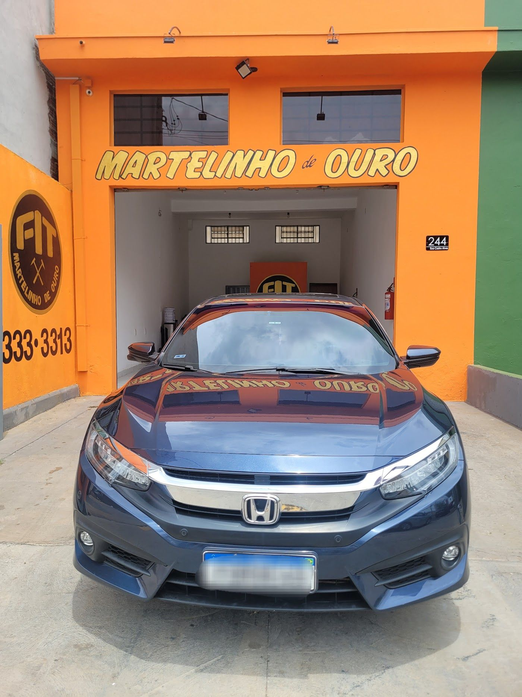

Início / Polimento e proteção
Especialidade 02
Polimento
e proteção
Brilho de volta, riscos leves corrigidos e a pintura protegida por mais tempo.
Serviços
Do brilho à proteção
de longa duração
Polimento técnico
Remove riscos leves, manchas e marcas de lavagem, e devolve a profundidade da cor.
Cristalização
Realça o brilho e cria uma camada de proteção sobre a pintura.
Vitrificação
Camada de proteção mais resistente, que facilita a limpeza e mantém o visual por mais tempo.
Retoques e pequenos reparos
Correção de pequenos danos na lataria para o carro ficar impecável por completo.

Para quem é
Ideal para quem
vai vender, trocar ou
cuidar do que é seu
O tipo de serviço e o prazo são definidos na avaliação, de acordo com o estado da pintura do seu carro.
Dúvidas frequentes
Polimento sem mistério
Qual a diferença entre cristalização e vitrificação?
As duas protegem e dão brilho. A vitrificação forma uma camada mais resistente e dura mais. Na avaliação, indicamos a melhor opção para o seu uso.
O polimento tira qualquer risco?
Riscos leves e superficiais, sim. Riscos profundos, que chegam ao primer, precisam de outro tipo de reparo, e a gente avisa antes.
Preciso deixar o carro o dia todo?
Depende do serviço escolhido. O horário de entrega e de retirada é combinado no agendamento.
FIT Martelinho de Ouro
Brilho de carro novo, sem sair de Ribeirão
Mande a foto do amassado ou escolha um horário. A gente responde pelo WhatsApp.